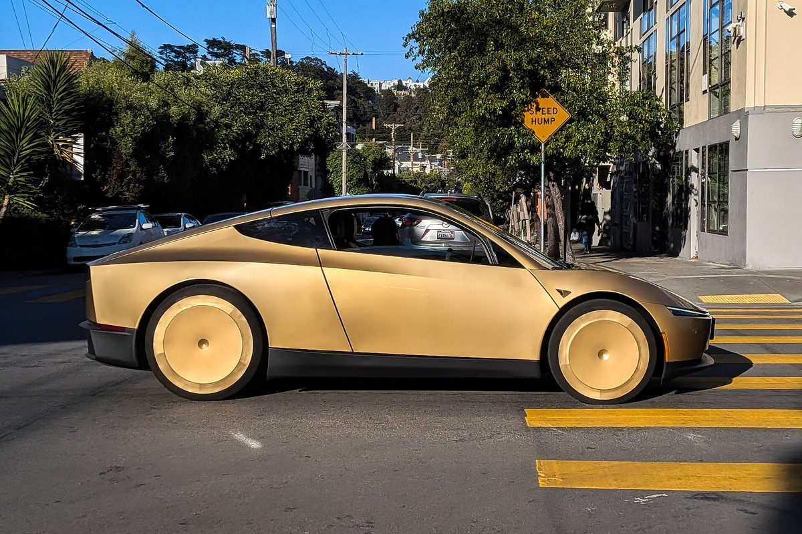

Cybertruck makes room for robotaxi production
Musk put a mid-2027 date on winding down Cybertruck builds at Gigafactory Texas, then reassured owners the truck fleet is not disappearing. Separately he cheered Tesla's ninth straight month atop South Korea's imported-car market.
At 1:30 a.m. EST Friday, Musk wrote: "Tesla will be winding down production of the Cybertruck at Gigafactory Texas around the middle of next year to make room for increased Cybercab production." About two and a half hours later he replied to Owen Sparks, who had called the move the end of an era: "True, but the Cybertruck fleet will be around for a long time."


Tesla stays No. 1 in Korea imports
At 1:15 a.m. EST Friday Musk quote-posted DogeDesigner with "Tesla Korea," amplifying the claim that Tesla held first place among South Korea imported brands for a ninth straight month. Businesskorea, citing the Korea Automobile Importers & Distributors Association, reported Tesla registered 9,165 vehicles in October — up sharply from a year earlier — ahead of Mercedes-Benz (6,744) and BMW (5,633). The Model Y Premium led all imported models with 5,501 registrations; Tesla's Model 3 added 2,199.